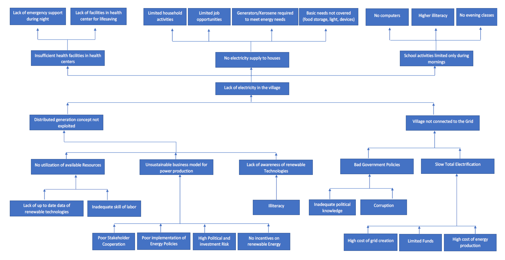
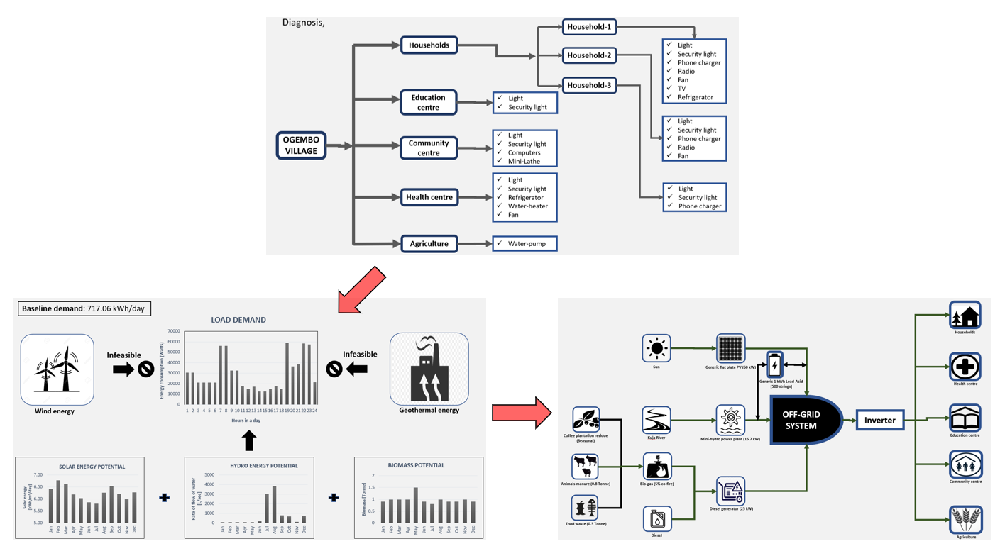
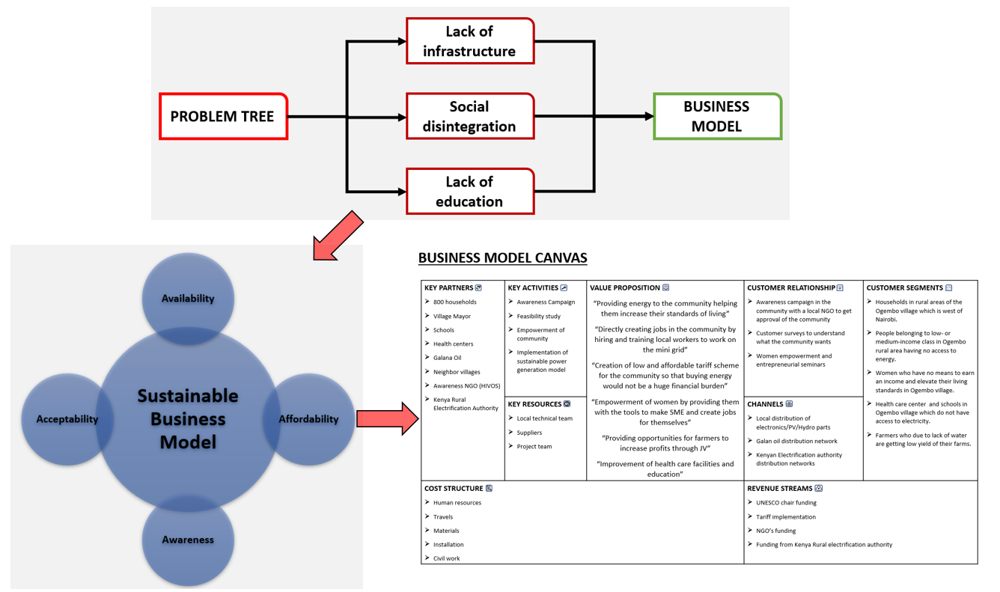
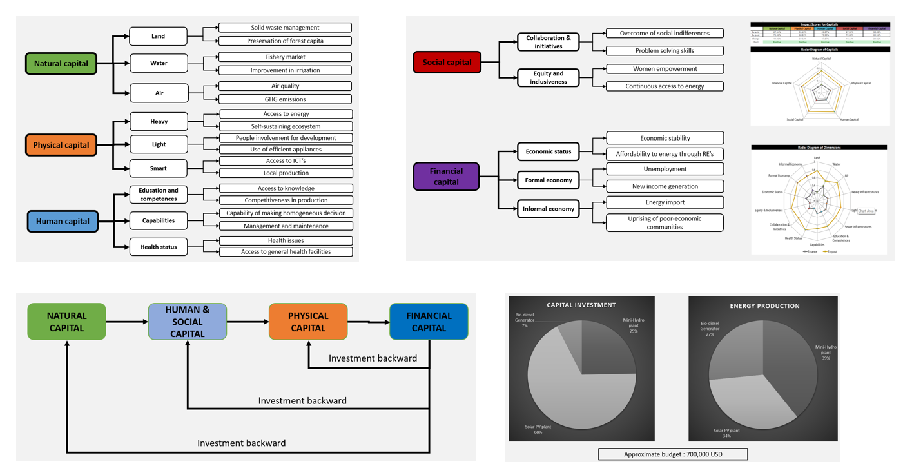

<div id="portfolio-page" class="portfolio-page-content">
    <div class="container">
        <div class="portfolio-nav">
            <div id="portfolio-close-button" class="portfolio-close-button">
                <a href="#portfolio"><i class="fa fa-close"></i></a>
            </div>
        </div>

        <div class="portfolio-title">
            <h1>Portfolio Project</h1>
        </div>

        <div class="row">
            <div class="col-sm-6 col-md-6 portfolio-block">
                <div class="owl-carousel portfolio-page-carousel">
                    <div class="item">
                        
                    </div>
                    <div class="item">
                        
                    </div>
                    <div class="item">
                        
                    </div>
                    <div class="item">
                        
                    </div>
                </div>

                <!-- <div class="portfolio-page-video embed-responsive embed-responsive-16by9">
                  <iframe class="embed-responsive-item" src="https://player.vimeo.com/video/97102654?autoplay=0"></iframe>
                </div> -->

                <!--
                <div class="portfolio-page-image">
                    
                </div>
                -->

                <script type="text/javascript">
                    jQuery(document).ready(function($){
                        $('.portfolio-page-carousel').owlCarousel({
                            smartSpeed:1200,
                            items: 1,
                            loop: true,
                            dots: true,
                            nav: true,
                            navText: false,
                            margin: 10
                        });
                    }); 
                </script>
            </div>

            <div class="col-sm-6 col-md-6 portfolio-block">
                <!-- Project Description -->
                <div class="block-title">
                    <h3>Promoting Renewable Energy for Rural Electrification in Kenya</h3>
                </div>
                <ul class="project-general-info">
                    <li><p><i class="fa fa-user"></i>Promoting Renewable Energy for Rural Electrification in Kenya</p></li>
                    <!-- <li><p><i class="fa fa-globe"></i> <a href="#" target="_blank">www.project-site.com</a></p></li> -->
                    <li><p><i class="fa fa-calendar"></i> Aug 2018 - Oct 2018</p></li>
                </ul>

                <p class="text-justify">While conducting this project, 70% of the Kenyan population had no access to electricity. Although the Kenyan government is committed to providing its citizens
                    with electricity, the progress to achieve this goal has been slow. Mostly due to the high cost of infrastructure that the government must pay to connect far off
                    villages and cities to the grid. Our project aims to reach out to a village in Kenya and provide its energy-starved inhabitants with electricity in a way that would
                    help elevate their standards of living and help them achieve economic, environmental and social stability. Since connecting the village to the grid is something that
                    cannot be done without a lot of capital and better government policymaking we realized that the best option to provide the people with electricity is implementing
                    a mini-off grid and using distributed energy generation.
                    With this background, defined the project goal as to develop a mini-grid in the rural area of Ogembo in Kenya while keeping in mind the three pillars of
                    sustainable development which are Social sustainability, Environmental sustainability and Economical sustainability. Talking about Environmental sustainability
                    I have comprehended that the village has a high solar and hydro potential. Thus, implemented solar panels and a hydro plant to generate electricity.
                    During the analysis, identified that there would be times when the solar energy and hydro plant would not be sufficient enough to meet the energy demand
                    of the population. Thus, integrated an Electric generator as a backup. But instead of using a generator that would use only diesel to produce the energy, employed a diesel and biogas generator, this would result in low consumption of fuel and reduced emissions. Our analysis shows that a lot of biomass is
                    generated in this rural area from the cattle and the farming industry the process of making biogas from this biomass would create jobs for the people and help in the creation of green energy. Thus with the use of solar PV, Hydro plant, a Diesel biogas cogenerator and the use of batteries we will be able to provide the villagers
                    with desired energy demand.
                    In discussion of social perspective, realized that implementing green technologies in the village without the consent of the public would not be beneficial
                    thus we need the public to be involved in this project. This can be done by raising the awareness of public about the importance of green technologies. This would
                    be done with the help of NGO’s, partnering with local NGO’s, who would organize seminars and campaigns to promote green technologies. We would
                    also recruit members from the village and train them to become technicians who would work on the plant for the rest of its life cycle. The village government will
                    be allowed to create a body that would control and regulate this mini-grid after its implementation. We are also allowing the villages nearby to get the surplus
                    energy produced by the grid and save it in batteries which they can use to light their homes. This is done to prevent any negative action from neighbouring villages.
                    Furthermore, we realized that women empowerment is necessary for this community if we want it to be socially sustainable. Thus, we are partnering with NGO’s
                    to promote entrepreneurship amongst the women in this region. Seminars on women empowerment, entrepreneurship and SME’s would be held in the village after
                    which the women would be allowed to start their own business by providing them with the tools that they need to create products from the resources that are
                    available to them. During the project, we will provide women with sewing machines to make cultural dresses that can be sold in the market. We would also provide
                    the community with the tools to use the local resources i.e waste products of Banana plantations, Tea and coffee plantations to produce wooden craftworks such
                    as biodegradable plates, cups. All this will help the locals to create many Small-Medium Enterprise (SME’s).
                    Lastly, we have addressed Economical sustainability. Since the mini-grid would be maintained by the local people it would provide jobs for the villagers. Furthermore,
                    access to energy would result in better crop development as now with this electricity water pumps can be used to irrigate the crops which would result in higher
                    profits. We are also introducing SMEs by empowering women and the community which would raise the standard of living of the population. During this project,
                    we have suggested to collaborate with local firms and national and international MNE’s to create a Joint Venture (JV) with the locals to utilize the resources to
                    create value added products. If this is successful, then the community can sell finished products (coffee and tea) to the market instead of only raw materials (coffee
                    beans and tea leaves). Furthermore, to remove the use of cooking with primitive stoves we would campaign for the use of advanced and efficient stoves and would
                    take actions to promote the creation of an industry that locally produces these advanced gas stoves by connecting the local oil and gas company with industrialists
                    and the local population. Thus, we can see that this project would increase the standard of living of the local community by providing them with renewable energy
                    and giving them economic and social stability.</p>
                <!-- /Project Description -->

                <!-- Technology -->
                <div class="tags-block">
                    <div class="block-title">
                        <h3>Keywords</h3>
                    </div>
                    <ul class="tags">
                        <li><a>Problem Tree</a></li>
                        <li><a>Objective Analysis</a></li>
                        <li><a>Load Demand Analysis</a></li>
                        <li><a>CESP Analysis</a></li>
                        <li><a>Joint Venturing</a></li>
                        <li><a>Sustainable Business Modelling</a></li>
                        <li><a>Renewable Energy Resources</a></li>
                        <li><a>Solar PV Modules</a></li>
                        <li><a>Wind Turbine</a></li>
                        <li><a>Bio-Diesel</a></li>
                        <li><a>Solid Waste Management</a></li>
                    </ul>
                </div>
                <!-- /Technology -->

                <!-- Share Buttons -->
                <!-- <div class="btn-group share-buttons">
                    <div class="block-title">
                        <h3>Share</h3>
                    </div>
                    <a href="#" target="_blank" class="btn"><i class="fa fa-facebook"></i> </a>
                    <a href="#" target="_blank" class="btn"><i class="fa fa-twitter"></i> </a>
                    <a href="#" target="_blank" class="btn"><i class="fa fa-dribbble"></i> </a>
                </div> -->
                <!-- /Share Buttons -->
            </div>
        </div>
    </div>
</div>
